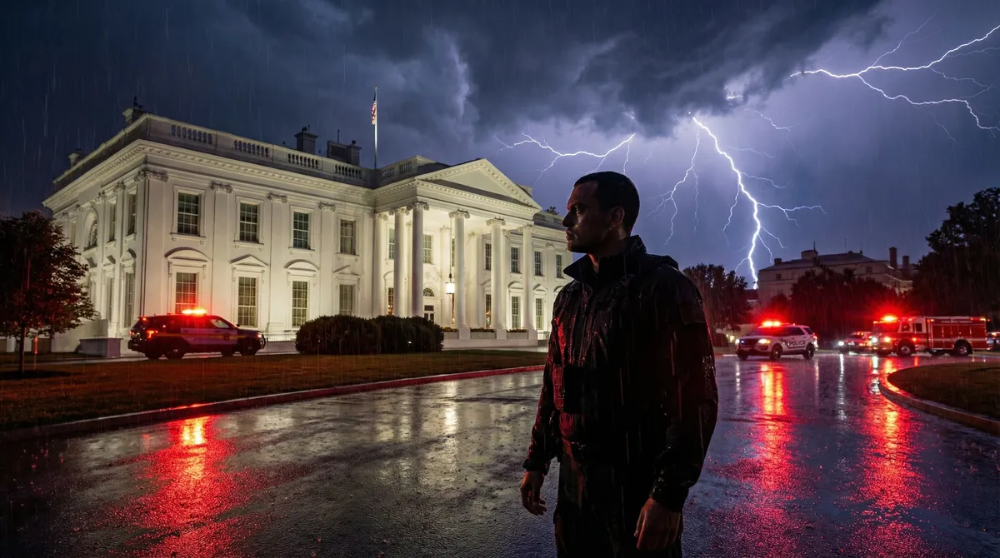
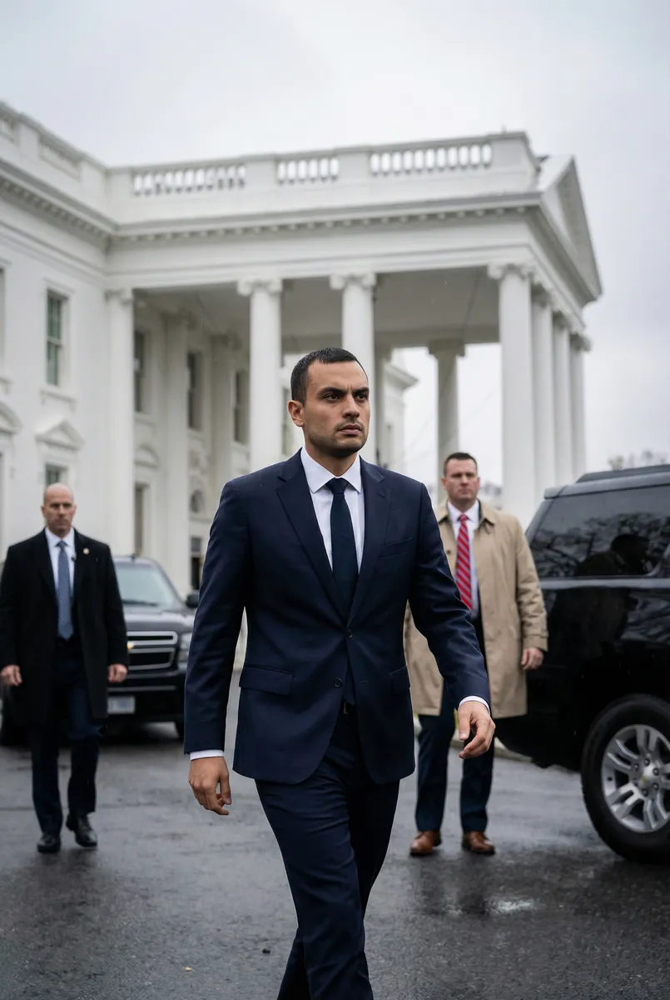
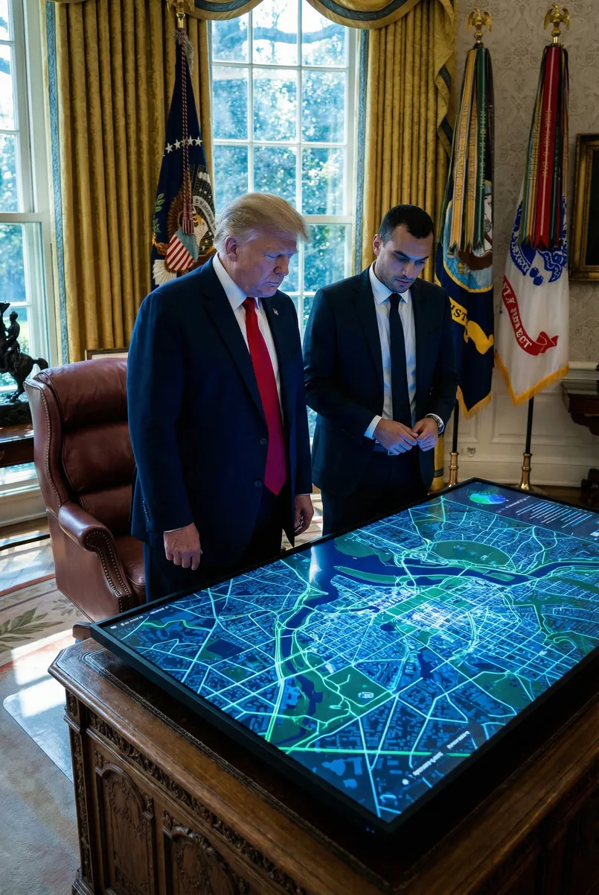
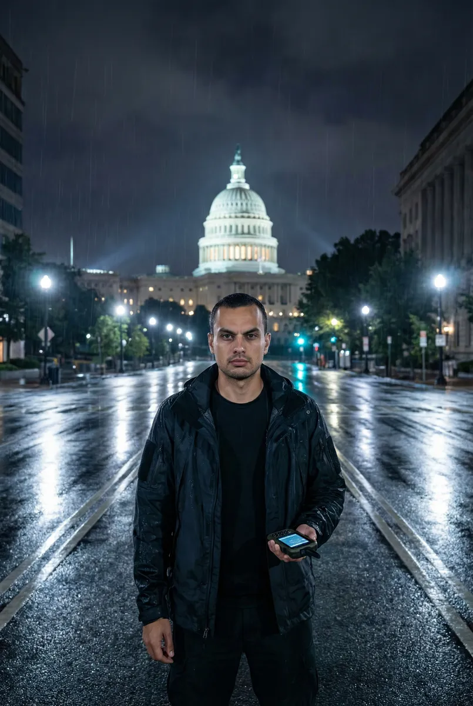
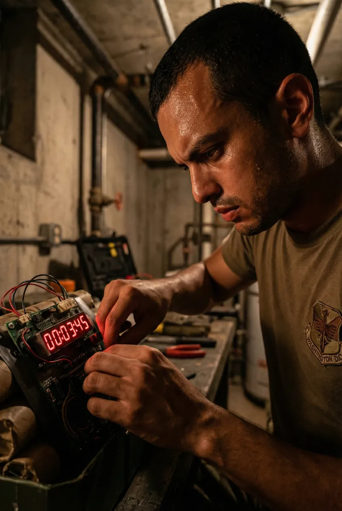

Operação Sentinela: Ricardo e o Ultimato de Washington

Protagonizado por Ricardo
Capítulo 1
O telefone de Ricardo tocou em uma linha criptografada. No outro lado, a voz inconfundível do presidente Donald Trump: 'Ricardo, você é o único em quem posso confiar. Temos uma ameaça nuclear em solo americano e o tempo está acabando.' Horas depois, Ricardo atravessava os portões da Casa Branca sob um céu carregado.
Prompt: Realistic photograph of Ricardo walking briskly towards the North Portico of the White House, wearing a dark suit, serious expression, security guards in the background, overcast sky, cinematic lighting.

Capítulo 2
Dentro do Salão Oval, o clima era de tensão absoluta. Trump apontou para um monitor mostrando um sinal de rádio captado nos arredores do Capitólio. 'Terroristas infiltraram um dispositivo nos túneis históricos. Preciso que você lidere a equipe de busca e neutralize o artefato antes do amanhecer', disse o presidente com firmeza.
Prompt: Donald Trump and Ricardo standing in the Oval Office, looking at a high-tech glowing digital map of Washington D.C. displayed on a large screen, realistic photography, sharp focus, dramatic shadows.

Capítulo 3
Ricardo assumiu o controle da operação tática. Nas ruas desertas e chuvosas de D.C., ele liderava uma unidade de elite. Usando um rastreador de radiação de última geração, ele seguiu o rastro invisível que passava por baixo dos monumentos icônicos, sentindo o peso da responsabilidade sobre seus ombros.
Prompt: Realistic wide shot of Ricardo in the middle of a deserted Pennsylvania Avenue at night, holding a tactical tracking device, the Capitol dome glowing in the distance, rain falling, 8k resolution.

Capítulo 4
O sinal levou Ricardo a um antigo bunker esquecido da era da Guerra Fria. Lá, ele encontrou o dispositivo: uma ogiva complexa conectada a um temporizador que marcava apenas dez minutos. Com mãos firmes e mente fria, Ricardo começou a desconectar os circuitos enquanto o mundo lá fora prendia a respiração.
Prompt: Close-up realistic photo of Ricardo's hands working on a complex nuclear device with wires and a red digital countdown, sweat on his forehead, dimly lit industrial basement setting, intense atmosphere.

Capítulo 5
Com um clique final, o cronômetro parou. Washington estava salva. Horas depois, sob o sol nascente, Ricardo foi recebido novamente por Trump, que apertou sua mão diante da bandeira americana. 'O mundo deve sua gratidão a você, Ricardo', declarou o presidente, encerrando a crise internacional.
Prompt: Realistic photography of Donald Trump shaking hands with Ricardo in the Rose Garden of the White House at sunrise, both looking proud, American flags in the background, soft morning light, cinematic composition.